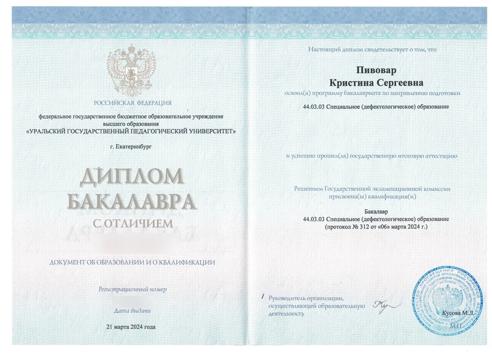
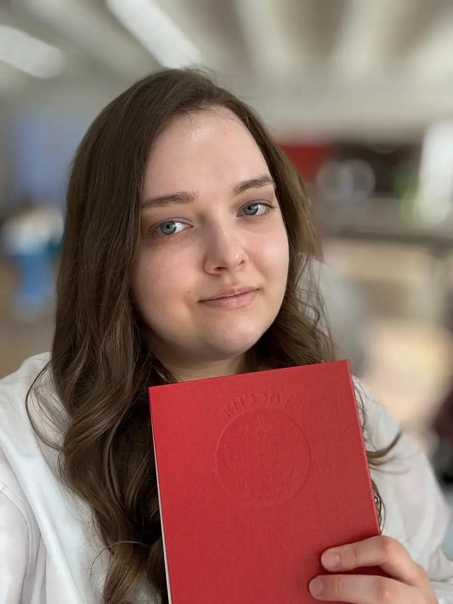
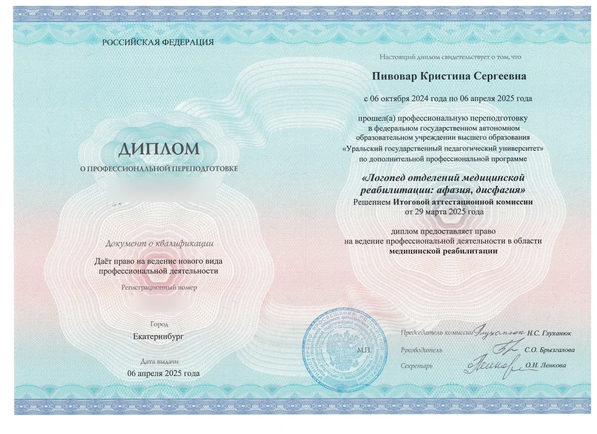
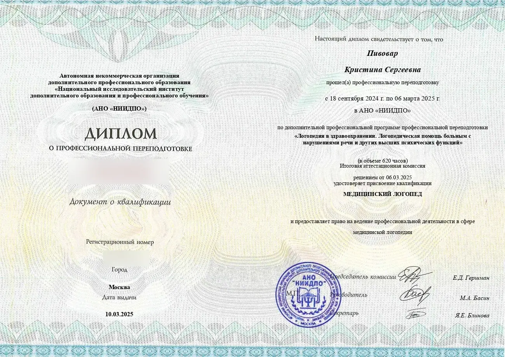
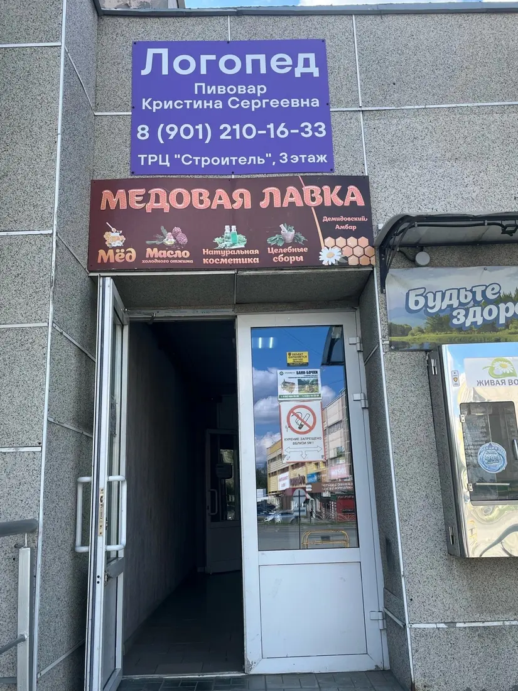
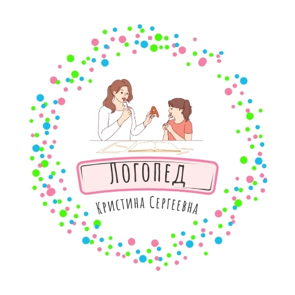

Открыть диплом ↗Высшее образование
44.03.03 Специальное (дефектологическое) образование
Профиль «Логопедия»
Уральский государственный педагогический университет · 2024
Логопедические занятия
Индивидуальные занятия для дошкольников, подростков и взрослых

Обо мне
Меня зовут Кристина Сергеевна Пивовар. Я логопед с высшим профильным образованием и более чем пятилетним опытом работы в частной практике.
Высшее образование
Профиль «Логопедия»
Моя задача — не просто поставить звук, а помочь человеку чувствовать себя увереннее в общении.
Образование
Высшее образование по направлению «Специальное (дефектологическое) образование» и две программы профессиональной переподготовки в области медицинской логопедии.

Открыть диплом ↗Высшее образование
Профиль «Логопедия»
Уральский государственный педагогический университет · 2024

Открыть диплом ↗Профессиональная переподготовка
Уральский государственный педагогический университет · 2025

Открыть диплом ↗Профессиональная переподготовка
АНО «НИИДПО» · 2025
Серии и регистрационные номера документов скрыты в публичной версии.
Направления работы
Занятия по коррекции нарушений устной речи выстраиваются с учётом возраста, речевых особенностей и поставленных целей.
Развитие артикуляционной моторики
Коррекция нарушений звукопроизношения
Развитие фонематических процессов
Формирование грамматического строя речи
Обогащение и активизация словарного запаса
Развитие связной речи
Услуги и цены
Продолжительность подбирается в зависимости от возраста, задач и способности сохранять продуктивное внимание.
Основная работа
Первичная встреча
Диагностика помогает определить особенности речи и наметить дальнейшие направления коррекционной работы.
Уточнить подходящий форматКак проходят занятия
Обсуждаем запрос, речевые трудности и желаемый результат занятий.
Оцениваю особенности речи и определяю направления дальнейшей работы.
Подбираю содержание и формат занятий с учётом возраста и выявленных особенностей.
Последовательно формируем необходимые навыки и отслеживаем динамику.
Логопедический кабинет
В кабинете есть отдельные зоны для индивидуальной и подгрупповой работы, а необходимые материалы всегда находятся под рукой.
Как найти кабинет
Вход в ТРЦ «Строитель» находится слева от магазина «Монетка». Для удобства ниже показан весь путь до кабинета.

Вход с улицыКороткий маршрут
Он находится слева от магазина «Монетка».
Далее следуйте по маршруту, показанному на видео.
На двери размещена табличка «Логопед Кристина Сергеевна».

Логопед Пивовар Кристина СергеевнаКонтакты
Позвоните или напишите во ВКонтакте, чтобы уточнить свободное время и подходящий формат занятий.